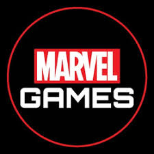

Історія ігор Marvel
Marvel Games
Marvel Games — видавничий бренд Marvel Entertainment, який випускає відеоігри, засновані на ліцензіях Marvel Comics, а також є відеоігровим-підрозділом Marvel Entertainment.
Заснована у березні 2009 року, компанія займається ліцензуванням інтелектуальної власності Marvel для розробників і видавців відеоігор. Після придбання The Walt Disney Company Marvel Entertainment у 2009 році активи Marvel Games були інтегровані в Disney Interactive, в той час як сам підрозділ залишився під керівництвом Marvel Entertainment.
Брендинг Marvel Games був відроджений після того, як Disney припинила свій інтерактивний медіа-бізнес як перший розробник та видавець, закривши Disney Interactive Studios, замість цього вирішивши ліцензувати свої інтелектуальні властивості для відеоігор. Відтоді Marvel Games займається публікацією й поширенням всіх відеоігор пов'язаних з Marvel від різних розробників.
Наприкінці січня 2017 року Marvel оголосила про спільне партнерство з Square Enix для мультиігрових проєктів, починаючи з гри, заснованої на Месниках.
Відеоігри
The Amazing Spider-Man vs. The Kingpin для (Sega Master System, Sega Genesis, Sega CD The Amazing Spider-Man для Game Boy The Amazing Spider-Man 2 для Game Boy The Amazing Spider-Man 3: Invasion of the Spider-Slayers для Game Boy The Amazing Spider-Man для Amiga, PC:DOS, Commodore 64, Atari ST The Amazing Spider-man для PlayStation 3, XBOX 360, PC The Amazing Spider-man 2 для PlayStation 3,XBOX 360, PC, XBOX ONE The Avengers: Battle of Earth для Xbox 360 Kinect Blade II для PlayStation 2 Капітан Америка: Doom Tube Captain America and the Avengers для гри Gear, Game Boy, SNES, Arcade і Sega Genesis Captain America and the Avengers для NES та PlayStation 2 Капітан Америка: Супер солдат для PlayStation 3 і X-Box 360 Шибайголова для Game Boy Advance Дедпул (гра) для ПК, Xbox 360 і PlayStation 3 Електра для мобільного телефону Перевага мобільного телефону Фантастична четвірка для Amstrad CPC, Apple II, Atari 8-біт, Commodore 64, DOS і ZX Spectrum Фантастична четвірка для PS Фантастична четвірка для PS2, GCN, Xbox і GBA Фантастична четвірка: Полум'я для GBA Фантастична четвірка: Повстання Срібного Серфера для PlayStation 2 . Ghost Rider: Гра для PS2, GBA і PSP Incredible Hulk: The Pantheon Saga для PS1, DOS, Sega Saturn Incredible Hulk для SNES Sega Genesis, Sega Master System, Game Gear The Hulk для PS2, GCN, Windows і Xbox The Incredible Hulk: Ultimate Destruction для PS2, GCN, Xbox The Hulk для Atari, Commodore 64, DOS і ZX Spectrum The Incredible Hulk для Game Boy Advance The Incredible Hulk для PlayStation 2 і Nitendo DS The Incredible Hulk для ПК, PlayStation 3, Wii, Xbox 360. Залізна людина / XO Manowar у Heavy Metal для PS, SAT, і Game Boy Непереможний Залізний Людина для GBA Залізна людина (гра) для Xbox 360, Wii, PS2, PS3, PSP, DS Iron Man 2 (гра) 2010 для Xbox 360, PS3, Wii і DS Lego Marvel Super Heroes для Xbox 360, PS3, PC, PS4, Xbox One, Wii U, Nintendo 3DS, PS Vita і Nintendo DS LEGO Marvel's Avengers для PlayStation 4, Xbox One, PlayStation 3, Xbox 360, Wii U, PlayStation Vita, Nintendo 3DS, Microsoft Windows і Mac OS Lego Marvel Super Heroes 2 для Playstation 4, Xbox One, Microsoft Windows, Mac OS і Nintendo Switch Marvel Super Heroes для Capcom Arcade, PS1 , Marvel Super Heroes проти Вуличний боєць для Capcom Arcade, PS1 Marvel Super Heroes: Війна дорогоцінних каменів для SNES Marvel Vs. Capcom для Capcom Arcade, Dreamcast і PS1 Marvel Vs. Capcom 2 для Capcom Arcade, Dreamcast, PS2, PS3, Xbox, Xbox 360 Marvel Vs. Capcom 3 для Xbox 360, PS3, PlayStation Vita Marvel Nemesis: Повстання недоліків для PS2, GameCube, Xbox, PSP, GBA Marvel: Ultimate PC, PS2, PS3, XB, XB360, GBA, PSP, Wii . Marvel: Ultimate Alliance 2 для Xbox 360, PS3, PS2, Nintendo Wii Marvel's X-Men для NES Marvel проти CAPCOM INFINITE для PS4, Xbox One Каратель для NES та Game Boy (з головним героєм Людина-павук) Каратель для DOS і Amiga Каратель для Xbox, PC і PS2 Каратель для Capcom Arcade і Буття Каратель для мобільних пристроїв Каратель: Без милосердя для PS3 Questprobe, мультиплатформова трилогія, заснована на персонажах Людина-павук, Фантастична четвірка і Галк Silver Surfer для NES Spider-Man для Atari 2600 Spider-Man для Atari 8-bit, Commodore 64, DOS і ZX Spectrum Spider-Man для PlayStation, Nintendo 64, Sega Dreamcast, PC, Macintosh, і Game Boy Color Spider-Man для SNES Spider-Man: The Video Game для Capcom Arcade Spider-Man and Captain America in Doctor Doom s Revenge для ПК Spider-Man: Battle For NY для GBA і Nintendo DS Spider-Man Cartoon Maker для ПК Spider-Man: Friend or Foe для PS2, XB360, Wii, NDS, PSP і Xbox Spider-Man: Lethal Недруги для SNES Spider-Man: Mysterio's Menace для GBA Spider-Man: The Animated Серії для Sega Genesis Spider-Man: Return of the Sinister Six для NES, Master System Spider-Man: The Movie для PS2, GCN, Xboxi Game Boy Advance Spider-Man: Web of Fire для Sega 32X Spider-Man 2 для GCN, NDS, N-Gage, PS2, PSP, Xbox, PC і Game Boy Advance Spider-Man 2: Enter Electro для PS1 Spider-Man 2: The Sinister Six для Game Boy Color Spider-Man 3 для PS3, XBox 360, Wii,PSP,PS2,PC і Xbox Spider-Man & Venom: Maximum Carnage для SNES і Sega Genesis Spider-Man & Venom: Separation Anxiety для SNES і Sega Genesis Spider-Man and the X-Men: arcade's Revenge для SNES, Sega Genesis, Game Boy, і Game Gear Spider-Man: Web of Shadows для Wii, PS2, PSP, PS3, Xbox 360 і Pc Spider-Man: Shattered Dimensions для PS3,Xbox 360,Wii і Pc Spider-man: Edge of Time для PS3,Xbox 360 і Wii Thor: God of Thunder для Playstation 3,Xbox 360 Ultimate Spider-Man для PS2, PC, Xbox, і GCN Росомаха для NES Росомаха: Справі Rage для SNES і Sega Genesis X-Men для Game Gear X-Men для Sega Genesis X-Men для NES X-Men для Capcom Arcade X-Men 2: Clone Wars для Sega Genesis X-Men: Children of the Atom для Capcom Arcade, sega Saturn, PS1 X-Men: Madness in Murderworld для Commodore 64, DOS X-Men: Mutant Academy для PlayStation X-Men: Mutant Academy для Game Boy Color X-Men: Mutant Academy 2 для PlayStation X-Men: Mutant Apocalypse для SNES X-Men: Mojo World для Game Gear, Sega Master System X-Men: Game Master s Legacy для Game Gear X-Men: Mutant Wars для Game Boy Color X-Men: Next Dimension для PS2, Xbox, Nintendo GameCube X-Men Legends для PS2, Xbox, N-Gage, Nintendo GameCube X-Men Legends II: Rise of Apocalypse для PS2, Xbox, Nintendo GameCube, PSP і PC X-men origins: Wolverine для PC, PS3, PS2, PSP і X-box 360 X-Men vs. Street Fighter для Capcom Arcade, sega Saturn, PS1 X-Men: The Ravages of Apocalypse X-Men: Reign of Apocalypse для Game Boy Advance X-Men: The Last Stand J2ME X-Men: Wolverine's Rage для Game Boy Color X2: Wolverine's Revenge для Xbox, PS2, Game Boy Advance, GameCube, Macintosh, Windows X-Men: The Official Game для PS2, Xbox, Nintendo GameCube, Windows, Xbox 360 X-Men: Destiny для PlayStation 3 і Xbox 360